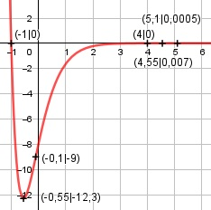

Aufgabe 147 f(x) = (2x2 - 6x - 8) * e-2x Produktregel erste Ableitung: u = 2x2 - 6x - 8, u' = 4x - 6 v = e-2x Kettenregel: v' = -2 * e-2x f'(x) = (4x - 6)*e-2x + (- 2)*e-2x*(2x2 - 6x - 8) f'(x) = e-2x * (4x - 6 - 4x2 + 12x + 16) f'(x) = e-2x * (- 4x2 + 16x + 10) Produktregel zweite Ableitung: u = e-2x Kettenregel: u' = -2 * e-2x v = -4x2 + 16x + 10, v' = -8x + 16 f''(x) = -2 * e-2x * (-4x2 + 16x + 10) + + (-8x +16) * e-2x f''(x) = e-2x * (8x2 - 32x - 20 - 8x + 16) f''(x) = e-2x * (8x2 - 40x - 4) 8x2 - 40x - 4 f''(x) = --------------- e2x Zur Beurteilung, ob f'''(x) ≠ 0: (Begründung siehe Aufgabe 105) u = 8x2 - 40x - 4, u' = 16x - 40 u' 16x - 40 f'''(x) = --- = ----------- ≠ 0 für alle x ≠ 2,5 v e2x weil 16x – 40 = 0 |+40 16x = 40 |:16 x = 2,5 Definitionsbereich: -∞ < x < ∞ Waagerechte Asymptote: 2x2 - 6x - 8 f(x) = (2x2 - 6x - 8) * e-2x = -------------- e2x geht gegen 0 für x --> ∞ Wertebereich: f(x) wird dann am kleinsten, wenn x = -0,55 (Extrempunkt) f(-0,55) = -12,3 --> -12,3 ≤ f(x) < ∞ Symmetrie zur y-Achse bzw. zum Punkt (0|0): f(-x) = (2(-x)2 - 6(-x) - 8) * e2x f(-x) = (2x2 + 6x - 8) * e-2(-x) ≠ f(x) --> keine Achsensymmetrie -f(-x) = -(2x2 + 6x - 8) * e-2(-x) ≠ f(x) --> keine Punktsymmetrie Nullstellen: f(x) = 0 (2x2 - 6x - 8) * e-2x = 0 |:e-2x 2x2 - 6x - 8 = 0 |:2 x2 - 3x - 4 = 0 p, q – Formel p = -3, q = -4 x1,2 = x1,2 = 1,5 ± x1,2 = 1,5 ± x1,2 = 1,5 ± 2,5 x1 = 4 x2 = - 1 N1(4|0), N2(-1|0) Schnittpunkt mit der y-Achse: x = 0 f(0) = (2 * 02 - 6 * 0 - 8) * e-2 * 0 = -8 Sy(0|-8) Extrempunkte: f'(x) = 0 e-2x * (-4x2 + 16x + 10) = 0 |:e-2x -4x2 + 16x + 10 = 0 |:(-4) x2 - 4x - 2,5 = 0 p, q – Formel p = -4, q = -2,5 x1,2 = x1,2 = 2 ± x1,2 = 2 ± x1,2 = 2 ± 2,55 x1 = 4,55 x2 = -0,55 x1 = 4,55 f(4,55) = (2*4,552 - 6*4,55 - 8)*e-2*4,55 = 0,0007 2 = -0,55 f(-0,55) = (2 * (-0,55)2 - 6 * (-0,55) - 8) * * e-2 * (-0,55) = -12,3 f''(4,55) = e-2*4,55*(8*4,552 - 40*4,55 - 4) < 0 --> Hochpunkt (4,55|0,0007) f''(-0,55) = e-2*(-0,55) * (8 * (-0,55)2 - - 40 * (-0,55) - 4) > 0 --> Tiefpunkt (- 0,55|- 12,3) Wendepunkte: f''(0) = 0 e-2x * (8x2 - 40x - 4) = 0 |:e-2x 8x2 - 40x - 4 = 0 | :8 x2 - 5x - 0,5 = 0 p, q – Formel p = -5, q = -0,5 x1,2 = x1,2 = 2,5 ± x1,2 = 2,5 ± x1,2 = 2,5 ± 2,6 x1 = 5,1 x2 = -0,1 f(5,1) = (2*5,12 - 6*5,1 - 8) * e-2*5,1 = 0,0005 --> WP1(5,1|0,0005) f(-0,1) = (2 * (-0,12) - - 6 * (-0,1) - 8) * e-2 *(-0,1) = -9 --> WP2(-0,1|-9) Graph:
